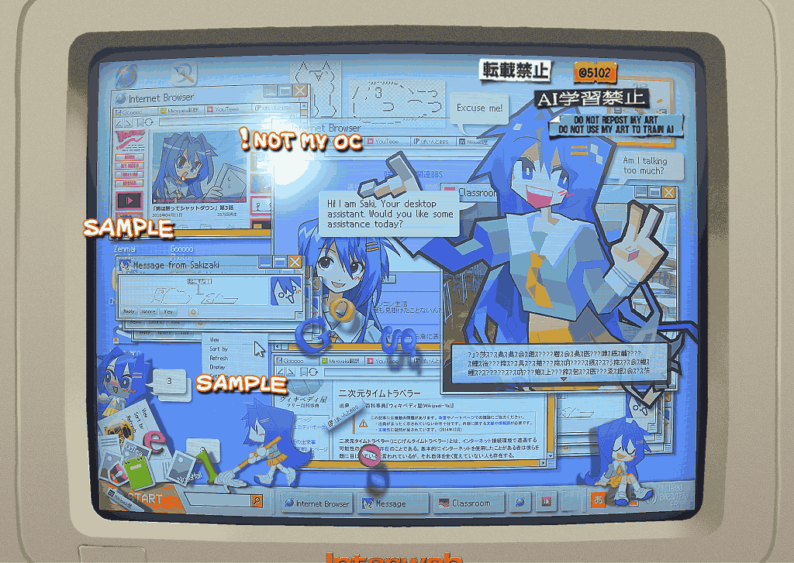

インターネットをさまようバーチャル都市伝説…みたいな不思議な可愛い女の子を描かせていただいた。エアインテーク！
デスクトップ構図でいこう、と決めたのでコラージュというより架空のOSを作る感じでデザインしていた。
少し画面と距離を設けたので「スクリーン上でしか認識できない存在」感が出たと思う。
周りのモニタ部分とデスクトップ部分はAviutlで重ね、液晶風の加工もAviutlで済ませている。セルアニメ風とかモニタ風の加工はAviutlを必ず使うのです。
最近手ブロ用の雑魚タブPCにLinux系のQ4OSというOSを入れたのだが、この作品を描くにあたりQ4OSの幅広いデザイン性をかなり参考にした。（Q4OS、めちゃめちゃ軽くて最高です。古いPCへの救世主でしかない）
今回描かせていただいた子は、絵柄や姿がコロコロ変わるという面白い設定を持っていたため、私も普段使わない絵柄で彼女を出力するという作業を行った。これがだいぶ面白かった…
ご依頼ありがとうございました！
2023/12/09
 Commission
Commission